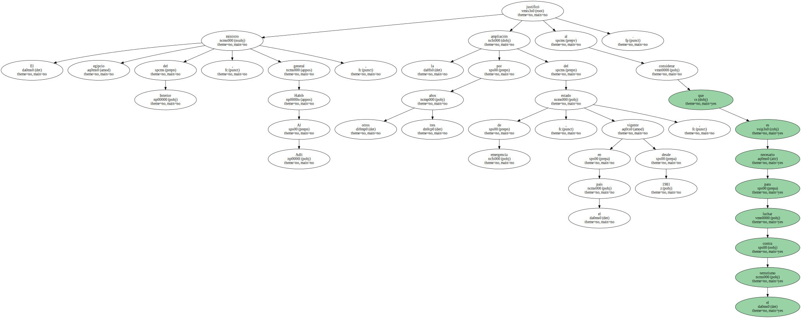
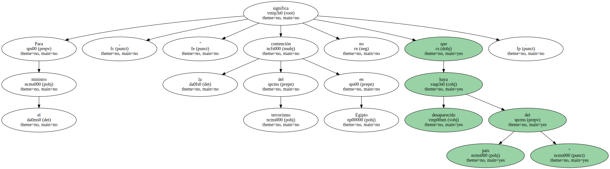
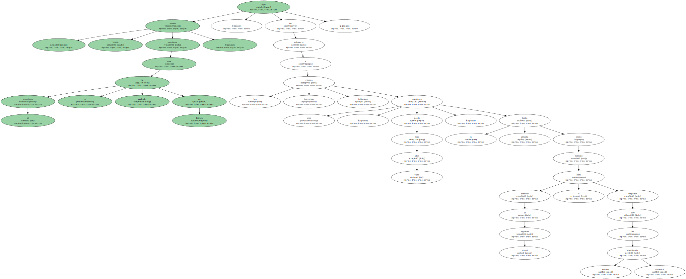
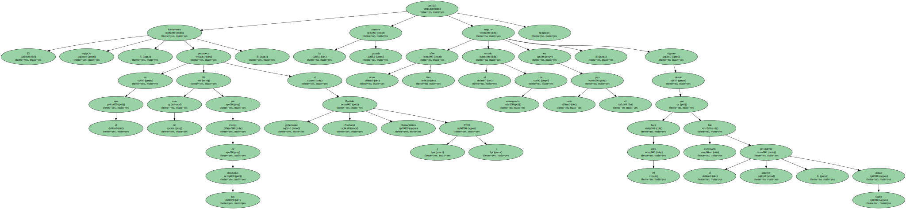
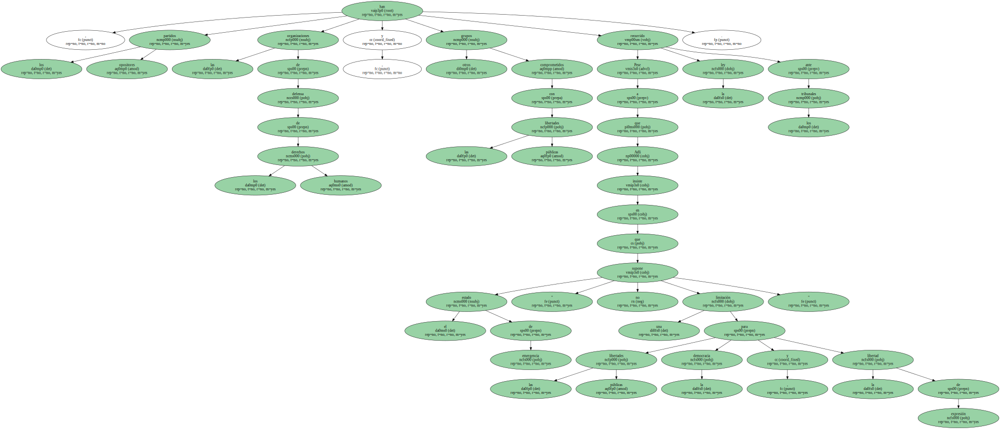
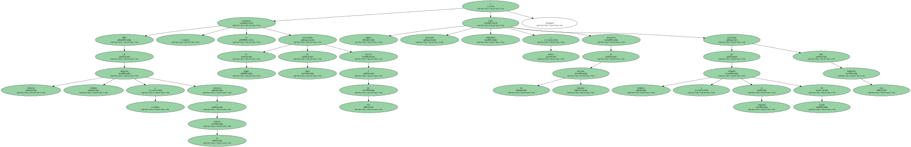

El ministro egipcio del Interior , general Habib Al Adli , justificó la ampliación por otros tres años del estado de emergencia , vigente en el país desde 1981 , al considerar que es necesario para luchar contra el terrorismo.
" El estado de emergencia se amplió como medida para asegurar lo conseguido en los últimos años , incluido el mantenimiento de la estabilidad y la limitación de los efectos de la violencia y el crimen organizado " , afirma Al Adli , en una entrevista publicada hoy , viernes , por el diario egipcio de propiedad estatal " Al Ahram ".

Para el ministro , " la contención del terrorismo en Egipto no significa que haya desaparecido del país ".
" Nadie puede proclamar que el terrorismo se ha acabado en Egipto " , dijo en referencia a los grupos integristas islámicos que , desde hace ocho años , mantienen la lucha armada como método para derrocar al régimen actual e imponer otro de estricta obediencia coránica.
El Parlamento egipcio , en el que más del 95 por ciento de los diputados pertenece al gobernante Partido Nacional Democrático ( PND ) , decidió la semana pasada ampliar otros tres años el estado de emergencia en todo el país , vigente desde que hace 19 años fue asesinado el anterior presidente , Anuar Sadat.
Pese a que Adli insiste en que el estado de emergencia " no supone una limitación para las libertades públicas , la democracia y la libertad de expresión " , los partidos opositores , las organizaciones de defensa de los derechos humanos y otros grupos comprometidos con las libertades públicas han recurrido la ley ante los tribunales.
Estas organizaciones consideran que el estado de emergencia es utilizado por el régimen , que encabeza el presidente , Hosni Mubarak , como arma para combatir a la oposición y reprimir a los defensores de los derechos humanos , al conceder a las autoridades el derecho a actuar y practicar detenciones indefinidas sin control judicial.

Miles de integristas islámicos , violentos y contrarios a la violencia , se encuentran encarcelados en Egipto sin juicio merced a esta ley e incluso algunos destacados sindicalistas y defensores de los derechos humanos están procesados por tribunales militares y de seguridad del Estado bajo esta legislación.
